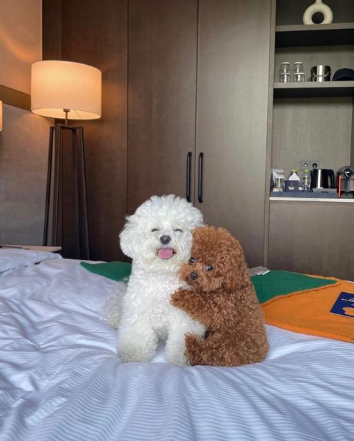

Poodles
The poodle is an extremely smart, energetic, and friendly dog known for their signature curly coat and three size varieties: toy, miniature, and standard. Under the poodle's frilly, low-shedding coat is a powerful athlete and an overall wonderful companion. These dogs typically get along with people very well and can be trained in a variety of tasks, including work as service and therapy dogs. Here's how the factors mentioned earlier apply to owning a Poodle:


Lifestyle and Time Commitment:
Poodles are active dogs that require regular exercise, mental stimulation, and grooming. They are suitable for owners who can provide them with plenty of attention and activities to keep them engaged.
Space and Living Arrangements:
Poodles can adapt to various living environments, including apartments, as long as they receive enough exercise and mental stimulation. They enjoy having access to outdoor areas where they can play and explore.
Costs:
Owning a Poodle can be costly due to grooming requirements. Poodles have a curly, hypoallergenic coat that requires regular grooming and trimming to prevent matting. Owners should also budget for food, veterinary care, training, and supplies.
Breed and Size:
Poodles come in three size varieties: Standard, Miniature, and Toy. Standard Poodles are the largest, standing over 15 inches tall at the shoulder. Miniature Poodles are between 10 and 15 inches tall, and Toy Poodles are under 10 inches tall. Poodles are known for their curly coats, which come in a variety of colors, including white, black, apricot, and blue. They are also known for their intelligence and trainability, making them popular in obedience and agility competitions.
Commitment and Responsibility:
Poodles are loyal and affectionate dogs that form strong bonds with their families. They require regular grooming, training, and socialization to thrive. Owners should be prepared to provide them with love, attention, and care throughout their lives.
Colors:
- Black
- White
- Silver
- Blue
- Gray
- Cream
- Apricot
- Red
- Brown
- Cafe au lait